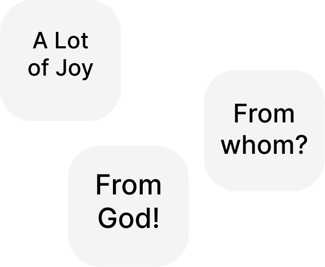

Glory Be to Jesus Christ!
🌞
Since in the work published at the link:
https://oleksandr-zhabenko.github.io/en/commentaries/02082025.html
and even earlier in others, published at the links:
https://churchandsociety.org.ua/pdf/projects/zbirnyk.pdf
https://oleksandr-zhabenko.github.io/en/commentaries/17082024.html
https://oleksandr-zhabenko.github.io/en/commentaries/27112024.html
it is written that the use of prepositions has important significance for the correct understanding of important and topical questions, particularly the question of power, I am writing comments regarding the use of precisely these prepositions. As advice regarding reading what is written — one can read the verse in translation or/and original (whoever has such possibility), and then the corresponding comment regarding prepositions here. Then it is necessary to understand which part of the verse the comment concerns, and also to consider what essential for understanding it affirms — or more rarely — denies. Such thoughtful reading helps to deepen understanding and protects from the mentioned mistakes.
Important works that shed light to this topic are the following:
https://oleksandr-zhabenko.github.io/en/commentaries/28052026.html
https://oleksandr-zhabenko.github.io/en/commentaries/16082026.html
I prepared an improved version of my research, the presentation of which is available at the link:
https://www.facebook.com/Oleksandr.S.Zhabenko/posts/
https://oleksandr-zhabenko.github.io/uk/commentaries/vystup-2025-hypo-genitive-Romans-XIII_1.pdf
The research material is currently being prepared for publication. I hope, God willing, to present fuller results later after the publication comes out.
I will update the list of references regarding prepositions at the links:
https://oleksandr-zhabenko.github.io/en/commentaries/02082025.html
https://oleksandr-zhabenko.github.io/uk/commentaries/Pryjmennyky.html
the latter — once or twice a month (in Ukrainian), to keep the text version current and up to date.
Translated from the Ukrainian original using Google Gemini Flash-3.6 with my consequent editing.
Strong's references (note: according to Strong) in the translation of the original text mean that the word is taken from Strong's dictionary, and the specific meaning was chosen following the translation and commentary by Google Gemini.
Liturgy:
Of the Departed:
1 Thessalonians IV, 15 — 'ἐν λόγῳ κυρίου' — 'en logo kyriou' — in the word of the Lord; by the word of the Lord; in the Word of the Lord.
Various translation options are possible; it must be remembered that the Word of the Lord can also denote Christ Himself (the Lord then being the Father). Nevertheless, the second option is most logical in this verse, where Lord
means Christ
, and it is implied that Christ announced this to the disciples. 'εἰς τὴν παρουσίαν τοῦ κυρίου' - 'eis ten parousian tou kyriou' — unto the coming of the Lord / for the coming of the Lord.
Either until the time of the Second Coming of Christ, or in order to see it while alive.
1 Thessalonians IV, 16 — 'ἐν κελεύσματι, ἐν φωνῇ ἀρχαγγέλου καὶ ἐν σάλπιγγι θεοῦ' — 'en keleusmati, en phone arkhangelou kai en salpingi theou' — with a shout, with the voice of the archangel, and with the trump of God.
The preposition 'en' indicates that which will be the environment
of the Second Coming, that is, effectively the direct accompaniment of the event itself. 'ἀπ’ οὐρανοῦ' - 'ap ouranou' — from heaven.
The preposition 'apo' in its form before a following vowel indicates that Christ will bodily descend from heaven to earth, even as He bodily ascended into heaven. 'οἱ νεκροὶ ἐν Χριστῷ ἀναστήσονται πρῶτον' - 'hoi nekroi en CHristo anastesontai proton' — the dead in Christ shall rise first.
The words in Christ
may refer to the dead, to the resurrection, or to both, standing between them in the original text. In the first case, it refers to the reposed faithful (all the dead shall rise, but here it concerns the destiny of the faithful); in the second case, to the resurrection of the dead by Christ; in the third, to both options together.
1 Thessalonians IV, 17 — 'ἐν νεφέλαις εἰς ἀπάντησιν τοῦ κυρίου εἰς ἀέρα' — 'en nephelais eis apantesin tou kyriou eis aera' — in the clouds, to meet the Lord in the air.
That is, clouds will catch up the faithful (or will merely accompany their lifting up) for their meeting with Christ in glory. Since Christ will descend from the heaven at His Coming, these words imply that He will at least at times ascend to the heaven again thereafter and descend to earth as well, or will ascend again into the heaven, whither the faithful shall also be caught up in the clouds.
I would draw attention to the fact that the texts employ the word παρακαλεῖτε [parakaleite] (1 Thessalonians IV, 18, which is not read, but concludes the words of the Apostle read today). These are polysemous words deriving from calling near
, signifying here comfort you
, from which we have the title of the Holy Spirit — the Comforter, the Paraclete
.
For the reading from the Apostle, see the links:
https://oleksandr-zhabenko.github.io/en/commentaries/07112025.html
https://oleksandr-zhabenko.github.io/en/commentaries/22022025.html
https://oleksandr-zhabenko.github.io/en/commentaries/27042023.html
https://oleksandr-zhabenko.github.io/en/commentaries/21102023.html
John V, 24 — 'εἰς κρίσιν' — 'eis krisin' — into condemnation / unto judgment; for judgment.
Rather the former, as the latter carries a nuance that people somehow have a specific destination to come to judgment. 'ἐκ τοῦ θανάτου εἰς τὴν ζωήν' - 'ek tou thanatou eis ten zoen' — from death unto life.
The pair of prepositions 'ek' - 'eis' emphasizes the transition from death unto life.
John V, 26 — 'ἐν ἑαυτῷ' — 'en heauto' — in Himself.
See more at the links:
https://oleksandr-zhabenko.github.io/en/commentaries/17082024.html
https://churchandsociety.org.ua/pdf/projects/zbirnyk.pdf
John V, 28 — 'ἐν ᾗ' — 'en he' — in the which.
'πάντες οἱ ἐν τοῖς μνημείοις' - 'pantes hoi en tois mnemeiois' — all that are in the graves.
John V, 29 — 'εἰς ἀνάστασιν ζωῆς' — 'eis anastasin zoes' — unto the resurrection of life.
'εἰς ἀνάστασιν κρίσεως' - 'eis anastasin kriseos' — unto the resurrection of damnation / judgment.
Both translation options are possible; the first indicates movement, whilst the second points to the goal of movement.
John V, 30 — 'ἀπ’ ἐμαυτοῦ' — 'ap emautou' — of Mine own self / from Myself.
The preposition 'apo' in its form before a following vowel indicates that the hypothetical action spoken of continues to hold objective significance after its execution (yet Christ does not act from Himself alone, but in unity with the Father and the Spirit).
Christ in His words concerning judgment and will implies that He is an impartial Judge and Executor of God's (the Father's) will (which is also His own as God, for it is proper to the nature of God, and this nature in the Father, Son, and Spirit is one).
Since God's will is also the will of the Son of God (one of the two natural wills of Jesus Christ), the leading will (for the human will of Jesus is obedient to the Divine will of Jesus), the words I seek not
, I execute
together signify that the Son of God relates to that will simply — He fulfills (executes) it. He does not dispute it, nor investigate it, nor learn it, nor attempt to comprehend it, nor oppose it, but knows and fulfills it. This Divine will is an expression of Himself, since the human will of Jesus is obedient to it. He Himself is the truth, therefore He is impartial (there is no need for Him to take in advance a position regarding a decision concerning any creation, as occurs in creation in the case of partiality when creation takes a certain position in advance). And God's will is that creation should freely be with God in joy and love.
Therefore Jesus is a Righteous Judge.
For the reading from the Gospel, see the links:
https://www.facebook.com/Oleksandr.S.Zhabenko/posts/
https://oleksandr-zhabenko.github.io/en/commentaries/27042023.html
https://www.facebook.com/Oleksandr.S.Zhabenko/posts/
https://oleksandr-zhabenko.github.io/en/commentaries/22042026.html
https://oleksandr-zhabenko.github.io/en/commentaries/22022025.html
https://oleksandr-zhabenko.github.io/en/Trinity.html
2 Corinthians III, 13 — 'εἰς τὸ τέλος' — 'eis to telos' — to the end / unto the completion.
One may think that they stedfastly looked
, that is, Moses wished that the aging of his face should not distract from knowing God. At the same time, God wished that the glory of Moses' face should also prompt people to divine knowledge. Although formally Moses sought to do the opposite
to God (hid his face, which God on the contrary wished to glorify), they acted together towards one common goal — to foster the knowledge and glorification of God.
2 Corinthians III, 14 — 'ἐν Χριστῷ' — 'en CHristo' — in Christ.
Emphasizes life in Christ. That is, it is not enough merely to be Christians by conviction, but one must also live in Christ so as to take away that vail
.
2 Corinthians III, 18 — 'ἀπὸ δόξης εἰς δόξαν' — 'apo doxes eis doxan' — from glory to glory.
Here the preposition 'apo' is used instead of the more frequently employed preposition 'ek' in such cases. This former underlines that people go forth and leave
the old for the new. Similar logic in the Gospels is found in the parables of the new wineskins and the new garment. See more at the links:
https://www.facebook.com/Oleksandr.S.Zhabenko/posts/
https://oleksandr-zhabenko.github.io/uk/commentaries/vystup-2025-hypo-genitive-Romans-XIII_1.pdf
https://oleksandr-zhabenko.github.io/en/commentaries/13092024.html
https://oleksandr-zhabenko.github.io/en/commentaries/25092024.html
'ἀπὸ κυρίου πνεύματος' — 'apo kyriou pneumatos' — even as by the Spirit of the Lord / from the Lord Spirit.
Here the preposition 'apo' is used in another sense — emphasizing that this is a gift of the Holy Spirit.
Paul describes very figuratively and profoundly the experience of the New Covenant in comparison with Old Testament Moses and the Israelites. Moses hid his glory because his body was old (he was 80-120 years old, though he preserved bodily strength and completely full clarity of mind), and also so that the Israelites should not see a deity in him. Paul wrote earlier that the Old Covenant has glory, yet it passes away, whereas the New is such as will endure. And here he explains how this glory of the New Covenant, of God's redemption and salvation, glorification and the like through the synergy of the faithful with God in Christ, in the Holy Spirit — how this glory transforms them — from glory to glory
— that is, does not fade, does not cease, but endures and grows.
The vail
is figuratively called the need to await Christ. As long as a person awaits Christ as one who is not yet Christ's, awaiting as if a stranger, so long does this vail
remain upon them. But as they become Christ's, become their own
to Christ, the vail
is taken away, yielding to the open face
of union with Christ and co-transfiguration with Him in the Holy Spirit.
Effectively everything together means that the Lord Jesus Christ, in Whose image all people are created, desires to transfigure people in salvation so as to remove this vail, this obstacle
of merely awaiting
, rather than the reality itself, that we might know Him face to face
, openly, freely, and boldly.
I shall also add here a passage regarding the Mother of God.
Luke II, 35 — 'ὅπως ἂν ἀποκαλυφθῶσιν ἐκ πολλῶν καρδιῶν διαλογισμοί' — 'hopos an apokalyphthosin ek pollon kardion dialogismoi' — that the thoughts [reasonings, calculations, intentions] of many hearts may be revealed [unveiled].
The preposition 'ek' indicates that those thoughts originate out of the hearts, being the deepest and deeply personal. Here too is a direct parallel with the words of the Apostle Paul regarding the taking away of the vail
by Christ.
Returning to the words of Symeon the God-Receiver, we see that he speaks of how through the Mother of God the expectations of people become reality.
For more on the reading from the Apostle, see the links:
https://oleksandr-zhabenko.github.io/en/commentaries/02022026.html
https://oleksandr-zhabenko.github.io/en/commentaries/01112025.html
https://oleksandr-zhabenko.github.io/en/commentaries/16112024.html
https://oleksandr-zhabenko.github.io/en/commentaries/28102023.html
Luke VI, 1 — 'ἐν σαββάτῳ' — 'en sabbato' — on the sabbath day.
When.
Luke VI, 4 — 'εἰς τὸν οἶκον τοῦ θεοῦ' — 'eis ton oikon tou theou' — into the house of God.
That is, into the temple. Where to.
Luke VI, 6 — 'ἐν ἑτέρῳ σαββάτῳ' — 'en hetero sabbato' — on another sabbath.
When. 'εἰς τὴν συναγωγήν' - 'eis ten synagogen' — into the synagogue.
Where to.
Luke VI, 7 — 'ἐν τῷ σαββάτῳ' — 'en to sabbato' — on the sabbath day.
Here with the article, which may indicate that it is not merely a day of the week, nor merely God's commandment, but a special commandment and practice crucial for the scribes and Pharisees themselves, something defining for them and their piety.
Luke VI, 8 — 'εἰς τὸ μέσον' — 'eis to meson' — forth in the midst / into the midst.
Set expression. Where to.
I wrote regarding the parallel passage in Matthew:
The key to understanding in this passage is Matthew XII, 7 — a quotation from the prophet Hosea VI, 6: For I desired mercy, and not sacrifice; and the knowledge of God more than burnt offerings.
Indeed, these words show what the Lord wishes us to do on the sabbath (Sunday, the Lord's Day, on feast days, more generally).
Mercy and the knowledge of God.
The priests are blameless, for they perform the service, which is both the one and the other; David was not guilty, for thereby God's goodwill towards him was revealed; the apostles are not guilty, for they testify thereby that they are with the Lord Jesus Christ. One can extend this list further, particularly regarding the Jews themselves and their assemblies in synagogues on the sabbaths.
These words also carry a broader sense — for good, time is always favorable. That is, for genuine good, time is no obstacle.
For more on the reading from the Gospel, see the links:
https://oleksandr-zhabenko.github.io/en/commentaries/04072025.html
https://oleksandr-zhabenko.github.io/en/commentaries/12102024.html
https://oleksandr-zhabenko.github.io/en/commentaries/14102023.html
Glory be to Thee, our God, glory be to Thee!